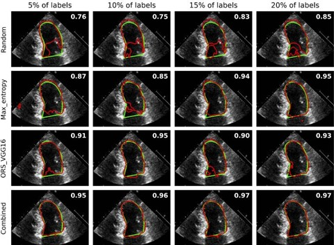
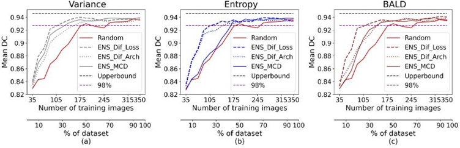
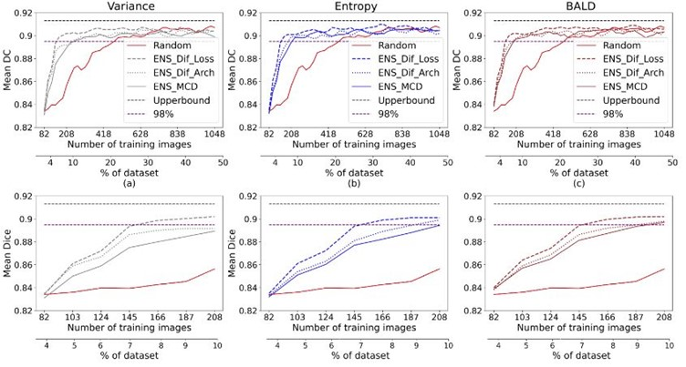
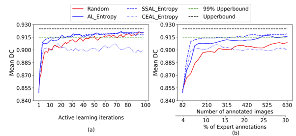

Introduction
This project addresses the challenge of scarce annotations; using deep learning and active learning (AL) techniques to reduce annotation costs and efforts while maintaining high segmentation accuracy and improving clinical workflow efficiency.
This work presents several AL methods, contributing to the cost-effective medical image annotation. The first project comprehensively evaluates existing AL approaches, establishing a valuable baseline for comparing different strategies. The second project explores ensemble-based AL techniques, leveraging different loss functions and uncertainty scoring methods. In the third project, a novel semi-supervised active learning method is developed, combining pseudo-labels from model predictions with expert annotations. The final project introduces an optimised clustering method using Fuzzy C-means for diversity sampling.
The outcome of the AL study was utilised to create a biobank of echo images for several projects to rank images and videos based on diversity. This method ensures that clinicians focus on labelling the images that will most effectively improve the AI model's performance, reducing the overall number of images that need to be annotated.

Fig. 1 A Sample image from the Unity dataset
Dataset
Three different datasets of cardiac imaging are used for our experiments:
the CAMUS dataset, the Unity dataset, and the consensus testing dataset.
CAMUS dataset is a public, fully annotated dataset for 2D echocardiographic assessment.
All the details of the CAMUS dataset are available on the official website (https://www.creatis.insa-lyon.fr/Challenge/camus/index.html).
Unity datasetis a private dataset extracted from 1224 videos of the apical four-chamber echocardiographic view retrieved
from Imperial College Healthcare NHS Trust's echocardiogram database.
The images are obtained using ultrasound equipment from GE and Philips manufacturers.
The acquisition of these images is ethically approved by the Health Regulatory Agency
(Integrated Research Application System identifier 243023).
It contains 2800 images sampled from different points in the cardiac cycle and labelled by a pool of
experts using our in-house online labelling platform (https://unityimaging.net).
This dataset was used for model developments (i.e., training and validation) and split into 70% for training, 15% for validation and 15% for testing.
Consensus dataset: It was utilised for the testing and was curated from a series of investigations conducted over three working days in 2019, years away from the development dataset. The testing dataset consisted of 100 A4C videos, from which 200 end-diastolic and end-systolic frames were selected automatically using a previously developed model. 11 human experts labelled each image using the same platform, mutually blinded to the labels of the others. The average of these 11 annotations was used for each image to create its GT. This provided high-quality consensus reference annotations, which served as a uniquely robust and representative benchmark for performance evaluations.
Network Architecture
The network architecture utilised in this study is the Monte Carlo dropout (MCD) U-Net with a depth of 5, designed explicitly for Bayesian AL in LV segmentation tasks. The overall architecture is depicted in the above figure. This architecture integrates dropout layers throughout the network to facilitate MCD for uncertainty estimation. The MCD U-Net was used as the baseline model for all of the following studies.

Fig. 2 The customised Bayesian U-Net architecture
Study 1: Active learning for left ventricle segmentation
This study evaluates existing AL approaches ( uncertainty and representativeness methods), establishing a valuable baseline for comparing different strategies.
Datasets and Methods
Unity and CAMUS datasets were used in this study for model development and testing.
A pool-based AL methodology is applied throughout, encompassing four steps: training the U-Net model on the initial annotated data (L), calculating the model uncertainty scores or representativeness scores on the unlabelled pool of data (U), selecting the top-ranked batch of images (K) to obtain their labels from oracle and add them to L and remove them from U, and finally retrain the model on the updated L. These steps are repeated until the optimal number of AL iterations is reached.
Random sampling and a variety of different selective sampling approaches are used for selecting the next batch of images from the unlabelled pool. The most common AL selection strategy is uncertainty sampling, where the most uncertain unlabelled images are queried for annotation. Such uncertainty methods include: Pixel-wise, Max_Entropy, and MCD ensemble-based methods using MCD_Eentropy, variance (MCD_Var), and Bayesian active learning with disagreement (BALD).

Implementation
Tensorflow and Keras frameworks are used for the development of DL models, and training was conducted using an Nvidia RTX3090 GPU. U-Net was trained using binary cross-entropy loss and ADAM optimiser with a learning rate of 0.0001 for 200 epochs with early stopping and a patience of 10. Images were resized to 512x512, and a fixed batch size of 8 was applied. For the CAMUS dataset, we selected 10% of the initial training data as L, and U will be the remaining 90%. For the Unity dataset, we chose 4% as the initial L, and the remaining is for the U, which will be used as an oracle.
Evaluation
The model was evaluated using the Dice-Coefficient (DC) metric, and it is computed between the ground truth and the inferred prediction for each image in the testing dataset. Then the mean of Dice scores of all images was calculated to present the model's accuracy.
Results:

Fig. 3 Active learning performance on CAMUS and Unity datasets
Fig. 3 shows the performance of uncertainty sampling techniques compared to random selection on CAMUS and Unity datasets.
Our experiments show that the Max_Entropy is the best uncertainty strategy compared to others on CAMUS and Unity datasets. It achieved 97.7% of the entire dataset performance on CAMUS using 25% of the annotated dataset. At the same time, the other methods required approximately 35% to approach similar performance. Thus, it reduced the annotation cost by 10% to get that performance.
For the Unity dataset, the Max_Entropy significantly outperformed all the other methods from the early stages of AL achieving 98.3% and ~ 99% of the entire dataset performance using only 7% and 20% of the labels, respectively.

More details on this study can be found at: https://www.sciencedirect.com/science/article/pii/S016926072400107X
Study 2: Ensembles-based active learning for LV Segmentation
This study explores the use of established loss functions in ensemble-based AL for LV segmentation compared to the MCD ensemble-based, and different network architectures ensemble-based methods.
Datasets and Methods
Unity and CAMUS datasets were used in this study for model development and testing.
The MCD U-Net model with dropout layers is used as the baseline model. Additionally, ResUnet and ResUnet++ are used for the ensemble-based method with different DL architectures. We customised their implementation by adding a dropout layer with a dropout probability of 0.3 after each encoder to have stochastic models.
A pool-based AL and different sampling methods were used for selecting the samples, including random and various uncertainty approaches, maximum entropy, variance, and BALD.
Ensemble-based AL approaches:
- MCD ensemble-based: MCD U-Net was trained on labelled data and used to predict each image from the unlabelled pool, with 100 predictions to measure its uncertainty.
- Multiple architectures ensemble-based: U-Net, ResUnet, and Re sUnet++ were trained on labelled data to predict unlabelled samples, with the predictions used to calculate uncertainty scores for each image.
- Different loss functions ensemble-based Three ensembles of the U-Net with three different loss functions (Binary cross entropy (BCE), Dice, and BCE + Dice) were trained.
Implementation and Evaluation
Implementation, training settings, and evaluation were conducted like the previous study.
Results:
The U-Net baseline was trained on the whole dataset, achieving a mean DC of 0.946 and 0.914 for the CAMUS and Unity testing datasets, respectively. As shown in the following figure, the results show that the proposed method (using three loss functions) outperformed the random, MCD, and multiple architecture ensemble-based methods for all the uncertainty sampling techniques on both datasets. The figure demonstrates that our proposed ensemble-based AL approach on CA MUS crossed 98% of the maximum performance using less than 30% of annotations for all uncertainty methods. However, 50% and 40% of annotations are needed for entropy and BALD, respectively, to achieve that performance using other ensemble-based methods.

Ensemble-based results for the CAMUS dataset
The following figure shows that the introduced method outperformed the alternatives on Unity, achieving 98% of the maximum performance utilising 7% of annotations. However, more than 10% of annotations, 208 images, are used to reach that performance using other approaches for all uncertainty strategies.

Ensemble-based results for the UNITY dataset
More details on this study can be found at: https://www.pure.ed.ac.uk/ws/portalfiles/portal/409667993/9782832512319_1_.PDF#page=103
Study 3: Semi-supervised Active Learning SSAL for LV Segmentation
This study investigates semi-supervised active learning for LV segmentation in echocardiography, aiming to reduce the need for extensive manual expert annotations. A novel technique for identifying reliable pseudo-labels is proposed.
Datasets and Methods
In this study, the Unity data set was used for model development, while the Consensus dataset was used for model testing.
The SSAL method selects reliable pseudo-labels from the mid-range of uncertainty scores in the unlabelled pool, representing the majority of samples, alongside expert labels of uncertain images to optimise annotation. A validation step is applied to choose the most confident pseudo-labels.
The phases of our method are as follows:
- The U-Net model is initially trained on the initial labelled data. At each AL iteration, uncertainty scores are computed for every image in the unlabelled pool using the model’s prediction. Then, images are ranked based on these scores, and the most uncertain samples are queried for annotation.
- Uncertainty scores for remaining unlabelled samples are normalised; The highest frequency bin in the uncertainty histogram determines the range of images as candidate pseudo labels.
- A threshold-shifting is applied to validate candidate pseudo-label quality. We analysed masks created at 0.4, 0.5, and 0.6 thresholds, focusing on variance. Low variance indicates strong model confidence, signifying stable segmentation across threshold adjustments. Reliable pseudo-labels are chosen from the low variance of the predictions, with post-processing applied before training.
- The final batch including expert annotations for uncertain images and reliable pseudo-labels is transferred from the unlabelled set to the labelled set, and the model is fine-tuned with the updated labelled data. These steps are iterated until AL iterations are met.
Implementation and Evaluation
Implementation, training settings, and evaluation were conducted in a similar way to the previous study.
Results:
Results show a significant reduction in annotation efforts by up to 93%, achieving 99% of the maximum accuracy using only 7% of labelled data. The study contributes to efficient annotation strategies in medical image segmentation.
